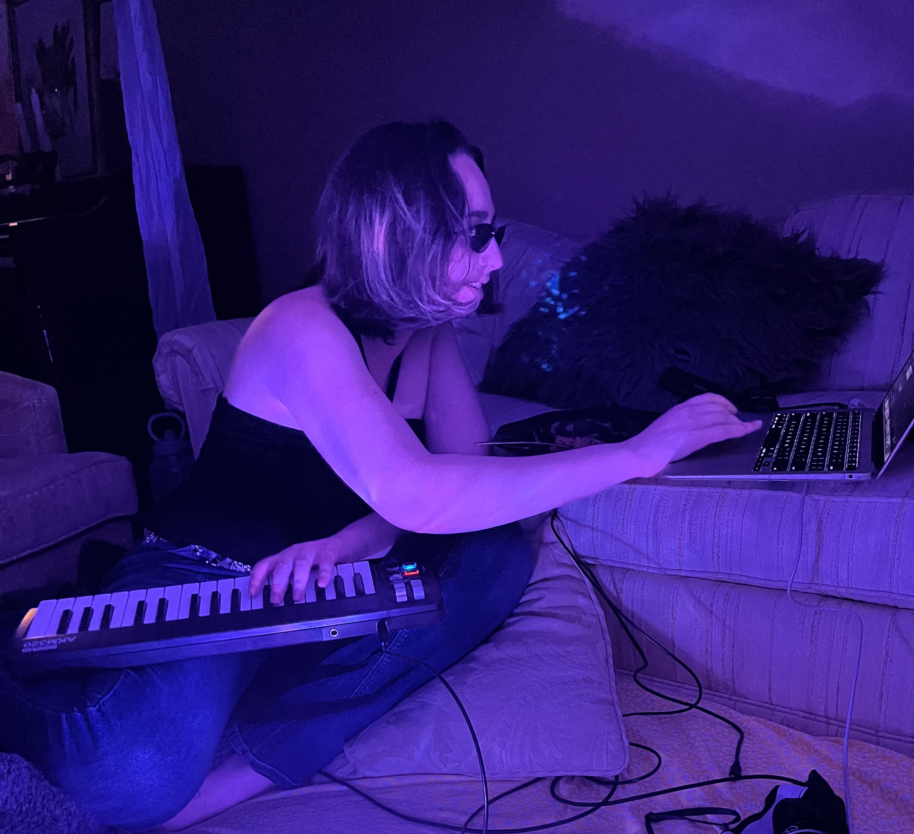

Artist Statement
I work across video, sound, installation, sculpture, and web-based projects, moving between them depending on what the idea calls for. I am interested in how systems shape perception, especially when they feel neutral or go unnoticed.
I often begin with something familiar and push it slightly out of place. Not enough to fully break it, but enough to expose how it works. Small repetitions, errors, and misalignments build over time, and the structure starts to show itself.
Translation is central to my process. I move material between forms to see what holds and what falls apart, using each shift to make underlying systems more visible. I work with fragments, collecting and rearranging them until new relationships emerge.
Meaning comes less from where something originated and more from how it sits next to something else. I am not trying to resolve these systems. I want them to remain slightly unstable, where perception feels uncertain and open.
Bio
Mina Gudis (b. 2003) is an artist working across video, sound, installation, sculpture, and web-based projects. Her practice examines how systems shape perception, memory, and everyday experience, especially when they appear neutral or fade into the background.
Working with personal recordings, found media, and low-resolution digital material, Gudis builds environments that begin in familiar territory and gradually fall out of place. Repetition, small errors, and misalignment accumulate, making underlying structures visible.
She frequently translates material across forms, moving image into sound, space into data, and physical environments into digital ones, using these shifts to test what holds and what breaks. Her work is driven by collecting and rearranging fragments, where meaning emerges through proximity rather than origin, and where humor and discomfort coexist without resolution.
Gudis is currently a student at Lewis & Clark College in Portland, Oregon, working between digital media and studio art.
CV
Education
Lewis & Clark College, Portland, OR
BA, Art; Minor in Business (anticipated 2026)
Exhibitions
Group Exhibition
Play Structure, Hoffman Gallery, Lewis & Clark College, Portland, OR, 2026
A Hiner Mayse
Professional Experience
Chabad at Lewis & Clark, Portland, OR
Co-Chair, 2024–Present
Los Angeles Poverty Department: Skid Row History Museum and Archive, Los Angeles, CA
Outreach and Development Intern, 2024
Archive Intern, 2018–2022
The People Concern, Studio 526, Los Angeles, CA
Studio Intern, 2023
Archival and Community Work
Susie Kozawa Historic Family and Business Archive, Los Angeles, CA
Volunteer Archivist, 2022
California Citrus State Historic Park, Riverside, CA
Volunteer Photographer, 2019
Skills
TouchDesigner, Blender, Adobe Creative Suite, Ableton Live
Archival processing and digitization
Audio recording and editing
Web-based media and digital environments
Contact
Email: mina.gudis@gmail.com
Instagram: @kosherozempic